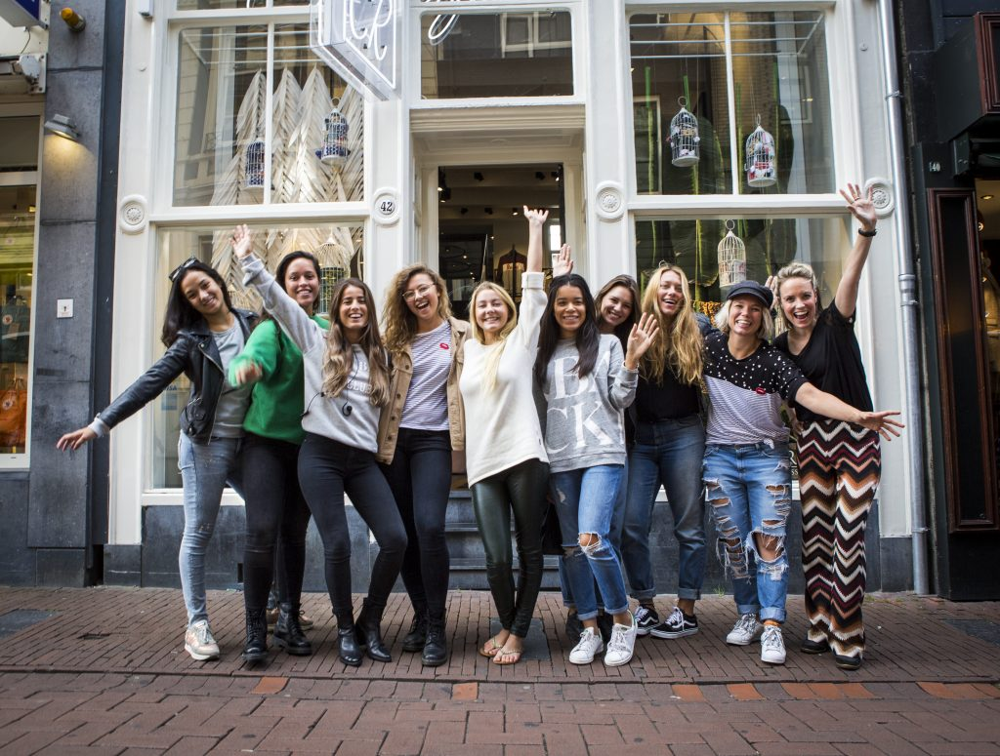
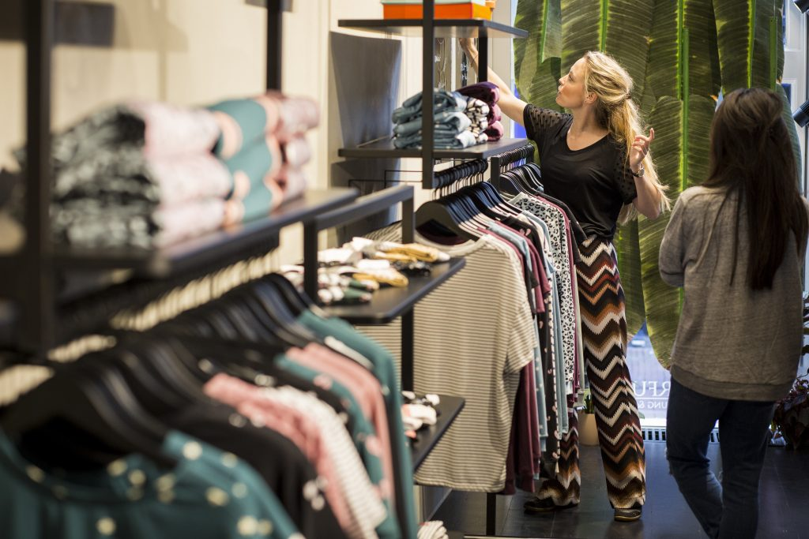
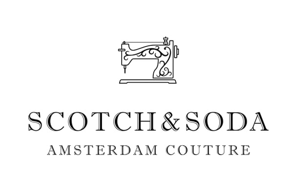

Training Retail Formule
Training Retail optimaliseert het service-, verkoop- en kennisniveau van uw organisatie. Onze trainingen zijn gericht op het behalen van directe resultaten: winkelbeleving, serviceverlening, verkoopvaardigheden, klantfocus en aftersales.
Onze modulaire “WOW-Formule” is ontwikkeld voor zowel grote als kleine organisaties waarbij uw personeel getraind wordt om aan de hoge verwachtingen van consumenten te kunnen voldoen. “WOW” staat voor: “Wat Onderscheidend Werkt”; voor zowel de motivatie van uw werknemers als voor de winkelbeleving van uw klanten.
Creëer een unieke identiteit door de WOW-formule dagelijks toe te passen zodat de beleving van uw werknemers en van uw klanten positief worden beïnvloed; “Ben het verhaal”.

Onderscheidend zijn
Social media heeft ervoor gezorgd dat niks meer geheim blijft. Een waardeloze serviceverlening zou zomaar kunnen betekenen dat binnen een minuut de halve wereld hiervan op de hoogte is.
Verrast worden door fantastische service en meegenomen worden in de passie van u als verkoper en waarbij ook nog eens interessante kennis wordt gedeeld! Onderscheidend vermogen is altijd belangrijk geweest. Een duidelijke identiteit met een sterke en consequente focus op assortiment en doelgroep.
Hoe bereik je dit onderscheidend vermogen? Wat maakt uw retailorganisatie en merkenassortiment zo uniek? Waarom komen en/of kopen mensen bij ons? Waarom zouden zij ons assortiment of winkel aanbevelen binnen hun netwerk? Dit lijkt vanzelfsprekend maar helaas wordt deze beleving nog lang niet overal gecreëerd. De meningen van uw klanten worden steeds belangrijker voor u als retailer. Zie de klant als gast en u bent de host. Persoonlijke aandacht voor élke klant en uw productkennis is waar de grote winst wordt behaald, intern en extern.

Communicatie en emotie
Onze formule richt zich op de meest effectieve manier van klantenbinding; Emotie. Beleving zorgt voor emotie en emotie doet kopen! We verkopen niet meer, we helpen de klant “aankopen”. Laat uw unieke verhaal aansluiten op de beleving, online en offline.
Uw werknemers worden voortdurend op scherp gezet door middel van training, coaching en feedback door onze trainers ter bevordering van de winkelperformance. Niet de prijs, maar een goede service is één van de belangrijkste factoren.
“De consument vindt de samenstelling van het assortiment en een betaalbare prijs minder belangrijk in vergelijking met voorgaande jaren”, zo laat de jury van de verkiezing Beste Winkelketen in Nederland weten. “De komende jaren kijken klanten nadrukkelijker naar het serviceniveau die retailers bieden”.
Referenties van onze klanten
wat anderen over ons zeggen

“Judith is a people person and has a great level of charm that has served her well as a trainer. She excelled at networking and researching the practical sides of training & development, using that information to implement well prepared workshops. She has a good understanding of (fashion) styling, technology, and processes which always contributed to our T&D department”.
Franchise Manager,
Scotch & Soda
“Judith heeft de deelnemers op een zeer professionele en humoristische wijze tot verandering aangezet. Ze weet een vertrouwde sfeer te creëren, is uiterst respectvol in haar feedback waardoor er een grote openheid ontstond bij de deelnemers in het geven en ontvangen van feedback. Samenwerken met Judith wordt daarmee een feestje, topkwaliteit gecombineerd met humor”.
Programma Manager,
Royal BAM Group
“De retail training van Judith aan het winkelpersoneel van CR was vakkundig en enthousiast.
De training was boeiend en interactief wat resulteerde in een dynamische zondagochtend. Judith kwam met (voor de hand liggende, maar die je toch snel vergeet) tips om de verkoop naar een beter niveau te leiden. Ook zorgde zij voor veel beweging en “meedoen” tijdens de training waardoor de aandacht niet verslapt. Al met al een interessante training met (stiekem) heel wat leer momenten”
Colourful Rebel